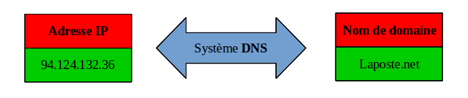
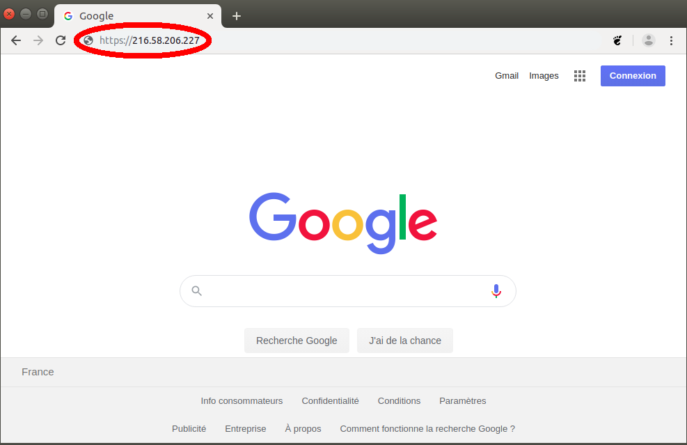
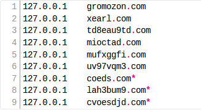

DNS
Définition (Le système DNS) :
Le DNS (Domain Name System), qu'on peut traduire
en « système de noms de domaine », est le service informatique utilisé pour
traduire les noms de domaine Internet (adresse symbolique) en adresse IP
et réciproquement.
Les équipements connectés à un réseau IP, possède une adresse IP
qui les identifie sur le réseau. Ces adresses sont numériques afin de faciliter
leur traitement par les machines, mais elles sont plus difficiles à manipuler pour les internautes.
Pour faciliter l'accès aux hôtes sur un réseau IP, le système DNS
a été mis en place pour associer à une adresse IP un nom de domaine.
Une adresse IP est difficile à retenir, il est plus facile de se souvenir d'un nom de domaine.
Le système DNS fonctionne comme un annuaire.

Serveur DNS
Définition (Le serveur DNS) :
Le serveur DNS est un ordinateur serveur dont le rôle est de traduire un nom de domaine
(adresse symbolique) en adresse IP.
Par exemple si vous avez lancé votre navigateur Internet et que vous avez www.google.fr comme moteur de recherche par défaut, alors la page recherche google s’est affichée.
Voici le mécanisme complet :

Ainsi, c'est complètement équivalent de taper dans la barre d'adresse URL du navigateur :
http://www.google.fr ou http://216.58.206.227
dans les deux cas cela va afficher la page recherche google :

Fonctionnement des serveurs DNS de votre ordinateur
Les serveurs DNS fonctionnent en cascade. Pour expliquer cela on pourrait dire que lorsque qu’un serveur DNS ne connait pas la réponse, il va demander à son serveur DNS parent.
Chez vous, le serveur DNS est par défaut votre box (sauf si vous avez renseigné autre chose), et si votre box ne sait pas répondre, elle va interroger son parent : le(s) serveur(s) DNS de votre FAI. Cela peut remonter comme ça jusqu’aux serveurs DNS racines qui sont les serveurs de base du système DNS : on ne peut pas remonter plus haut.)
La configuration DNS de votre ordinateur (ou tablette, et tout autre équipement connecté chez vous) est fournie par le serveur DHCP.
Serveur DHCP
Définition (Serveur DHCP) :
Un serveur DHCP () (ou service DHCP) est un serveur (ou service) qui délivre des adresses IP aux ordinateurs qui se connectent sur le réseau. DHCP est l’abréviation de
Dynamic Host Configuration Protocol (en français : Protocole de Configuration Dynamique d’Hôte).
Les cartes réseaux des ordinateurs doivent être paramétrées pour recevoir automatiquement des
adresses IP lorsque l’ordinateur démarre ou qu'on le connecte au réseau.
Chez vous c'est votre box qui s'en charge,
votre box internet remplit donc ce rôle de serveur DHCP sans que vous le sachiez !
On rappelle que l’adresse IP doit être unique sur un réseau donc le serveur DHCP (ou service DHCP) va gérer les adresses IP et n’attribuer que des adresses IP non utilisées à tout nouvel ordinateur qui en fait la demande.
Plus précisément, le serveur DHCP (ou service DHCP) va délivrer un bail DHCP à l’ordinateur qui en fait la demande.
Ce bail DHCP est constitué de trois éléments :
- une durée de vie (4h, 6h, … cela dépend du réglage de l’administrateur du service)
- une adresse IP dynamique (car elle change régulièrement)
- les paramètres du réseau (adresse de la passerelle, adresse du serveur DNS, ...)
Le fichier hosts
Définition (Fichier hosts) :
Le fichier hosts est un fichier présent sur la plupart des systèmes d'exploitation,
permettant de transposer un nom de domaine en adresse IP, avant même l'interrogation
du serveur DNS.
Ce fichier peut être très pratique pour indiquer manuellement au système
quel est le comportement à adopter vis-à-vis de telle ou telle adresse.
Le fichier hosts est consulté en premier à chaque connexion à un site web, un peu comme un répertoire d'adresses ou un annuaire. Si le site est répertorié dans la liste du fichier hosts, l'accès est bloqué si l'adresse est 127.0.0.1. Par contre, s'il n'est pas trouvé dans le fichier, c'est votre fournisseur d'accès (FAI) qui met en relation avec l'adresse IP du site demandé.
En modifiant le fichier hosts, il est possible notamment de réaliser les actions suivantes :
- interdire l'accès à certains sites,
- accélérer l'accès à certains sites préférés dont vous connaissez l'adresse IP. Attention toutefois, car en cas de changement de l'adresse IP du site, celui-ci deviendra inaccessible tant que la ligne sera présente dans le fichier host.
- contourner l'interdiction d'accès à des sites de sécurité provoquée par certains programmes nuisibles.

Changement de DNS
Il est possible de changer de DNS. Lorsque vous utilisez votre connexion Internet, les adresses des serveurs DNS sont généralement ceux de votre FAI, mais il est possible d’en changer, soit parce qu'on a peur d'être espionné, soit pour accélérer l'accès aux sites internets.
Quiz 8